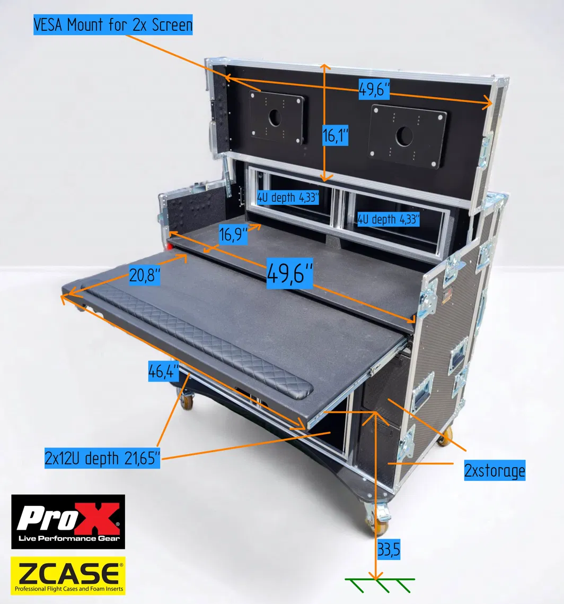
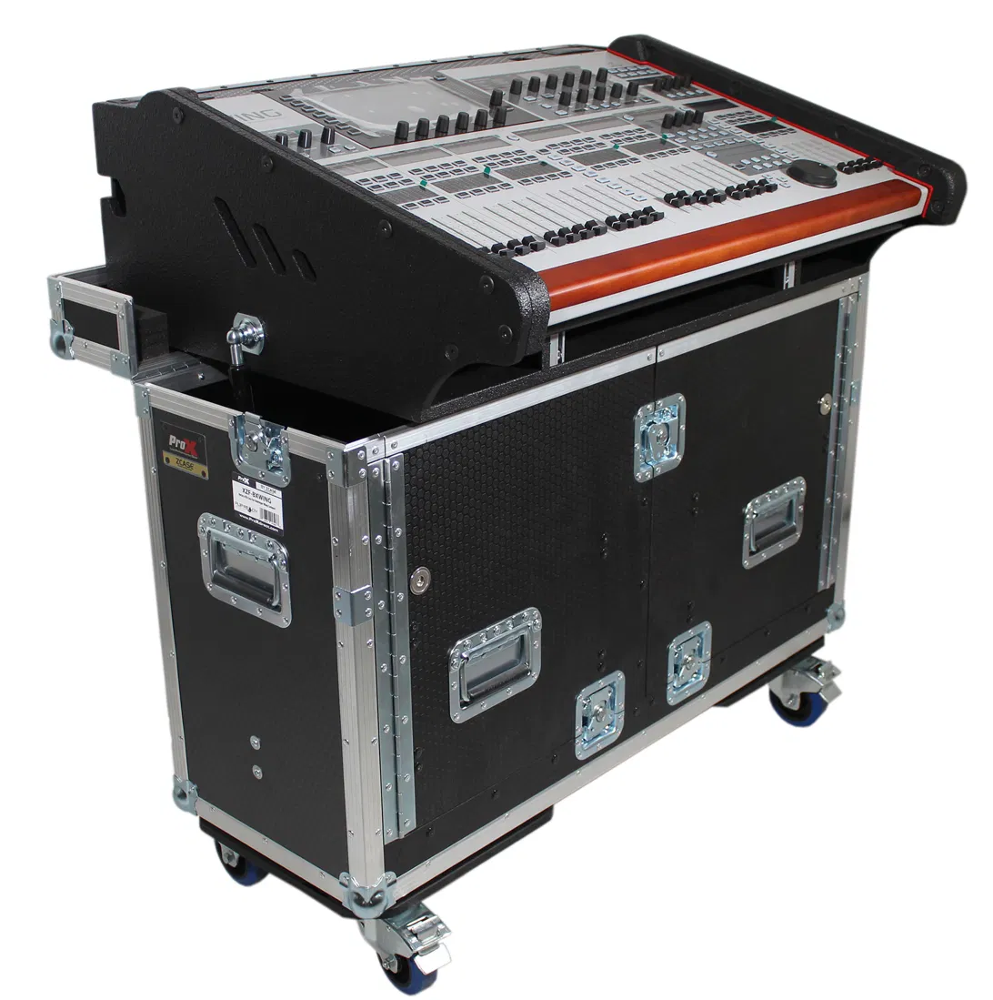

This build puts our video, network and control gear into the ProX AVPRO rolling workstation (the AVPRO). It has two 12U bays, two 4U tops and a work surface. Of its three lids, the flip-up lid holds the two monitors and the other two come off the case. The Behringer Wing sits beside it in the ProX BXWING hydraulic flip case (the Wing case), joined by five short cables. Every field cable and those five land on one labeled, color-coded panel on the back of the AVPRO.
Right now our rig deploys once or twice a week at different venues, and we set up and tear down under time pressure. The build also removes the need for extra tables. The Wing flips up in its own case, and the AVPRO brings its own work surface and pop-up lid tables (if the lid legs come with the case, which is open). The design puts the physical job first. The system has to set up, run the event and tear down reliably before anything else matters.
The order is about $4,600 ($4,641.84). That's an estimate. Most prices are estimated based on online pricing, and the cases and freight are placeholders until locked in with Matt. Almost all the gear inside is already owned, so it isn't in the total. A $125.88 Wing panel block (connector plate, jacks and power adapter) comes on top, only if the Wing case can take a plate.

The AVPRO product listing photo, with the seller's labels.
The layout is decided but can be adapted and changed. Colors are cable colors. The two removable lids are expected to have legs inside them, so each can pop up into an accessory table. That's open until Matt confirms.
This section walks the build from the outside in. Each starts with what happens there at a service or event. Then there's a short card for each part: what it does, why it's there, what we passed on if build/ records it, what it costs, what we give up, and where it stands.
The AVPRO is the production position. Streaming and presentation work is done at this desk under the two monitors on the flip-up lid, and audio mixing at the Wing case beside it. This creates a space for three stations at the production position.
The ATEM switcher, the ProPresenter Mac and the streaming laptop run from the desk. The switcher's I/O cables drop through a 3in grommet into the Bay A rack space.
Nobody touches Bay A for setup. It's wired once and left alone, and every network jumper stays inside it. All connection work is done from the rear panel instead.
Bay B charges the camera batteries. It carries no signal. The rest of it is storage, and all cabling is stored with the two cases.
This is the only face anyone touches during setup. Anyone setting up matches the color and number on each cable to a jack, and plugs in. Nothing plugs into a device directly, so field wear never reaches the gear.
At a service or event the two cases sit side by side, and five short cables join them. That's the whole connection between the AVPRO and the Wing case.
At a service or event the Wing is operated from its case and records to the ProTools Mac over USB-C. The ProTools Mac is planned to take over the stream mix as well as the live event mix. Until it does, the separate stream-mix laptop stays in use. That's open.

The BXWING product listing photo.
At a service or event two long cords run from wall outlets to the rig. The first feeds the AVPRO's battery backup, and the Wing through it. The second feeds Bay B and the charging station.
At a service or event the field cables are the runs out into the room: cameras, the LED wall, the confidence monitor and internet. Each one is labeled and color-coded, and each lands on the rear panel. All field cabling is stored with the two cases.
These are the options build/ records as passed on, dropped or parked, with the reason given at the time.
Every item here is open unless it says otherwise. Owners and dates are in the appendix.
A few smaller checks don't touch any of these. They cover shelf, monitor and side-door fit on delivery, four equipment label and model reads (the AVIO, the Shure combiner and antennas, and the camera converters, including whether they can return SDI), the drum-kit Dante question, where the UltraStudio mounts (rack-mounted, near the Mac Mini, or the desk near the ATEM), and how the Hollyland RX connects to ATEM IN 2.
The first order is about $4,600 ($4,641.84). Each category below has one line on what it covers.
| Category | Cost | What it covers and where it stands |
|---|---|---|
| {{ r.cat }} | {{ r.cost }} |
The owned gear moves into the cases in stages, starting from a setup closest to today's. Each stage is proved before the next. That's decided.
Weather is an accepted risk, because we often set up outside with no cover. The plan is a fitted rain cover or poly sheet and clamps in the case, with a two-minute cover-and-kill routine. That plan is still open, and I'll have it in place before the first live deploy.
Owned gear isn't in any total. Not in this BOM: camera field SDI cable (already owned, 100ft runs), stage power, the XLR trunk cables (owned), and the extension from Bay B to the charging station (open, not costed). "est" means an estimated price. "PLACEHOLDER" lines are estimates I still have to review.
| Group | Item | Model / SKU | Qty | Unit | Ext | Price status |
|---|---|---|---|---|---|---|
| {{ r.group }} | {{ r.item }} | {{ r.model }} | {{ r.qty }} | {{ r.unit }} | {{ r.ext }} | {{ r.status }} |
| First order total | {{ foTotal }} | of which {{ caseTotal }} case + freight placeholders | ||||
| Wing block (conditional, only if the BXWING can take a panel, N1) | ||||||
| {{ r.group }} | {{ r.item }} | {{ r.model }} | {{ r.qty }} | {{ r.unit }} | {{ r.ext }} | {{ r.status }} |
| Wing block total | {{ wbTotal }} | |||||
| All lines total | {{ allTotal }} | |||||
All are decided. Each one changes only through a written proposal that I accept.
| # | Decision | Reason |
|---|---|---|
| {{ r.n }} | {{ r.d }} | {{ r.why }} |
Running-config items are left out. G3 and G4 closed on 2026-09-28. Stage power items (N17, N18) are tracked with the separate stage-power project.
| Item | Owner | Due | Gates the order | Status |
|---|---|---|---|---|
| {{ r.id }} {{ r.title }} {{ r.detail }} {{ r.extra }} |
{{ r.owner }} | {{ r.due }} | {{ r.gates }} | {{ r.snote }} |
Each row is one signal chain, and panel names match the rear panel. The map is decided except where a route is marked open.